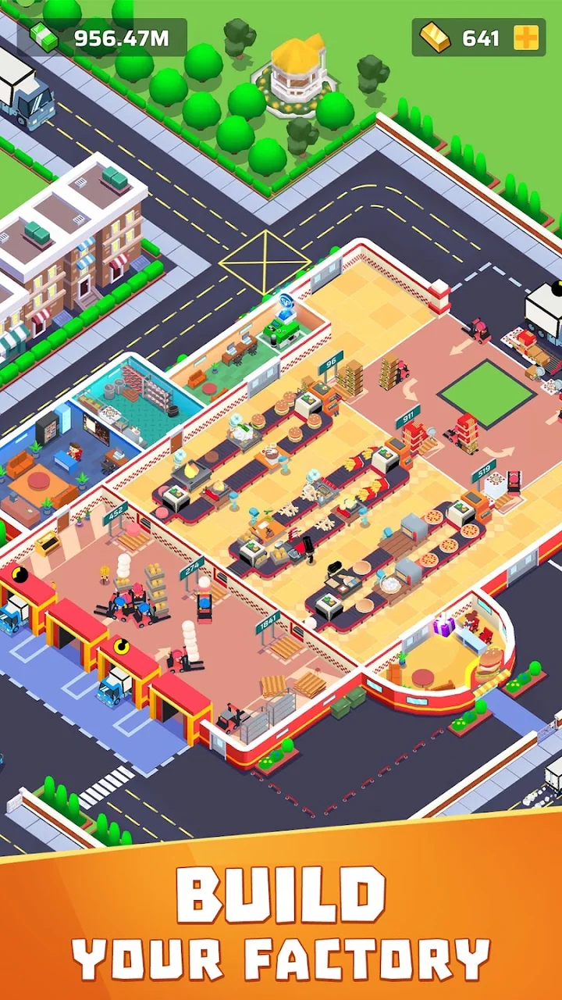
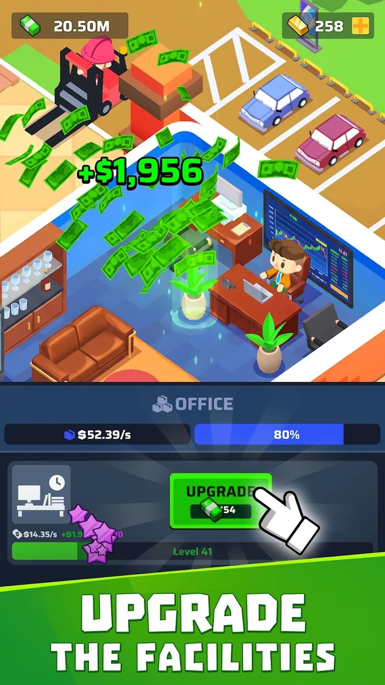

My Food Factory
Economy and production-flow design for an idle factory game. My main design challenge was deciding where to place the production choke point so the player could see a busy factory producing and shipping packages.
- Role
- Game Designer, Century Games
- Focus
- Economy balancing & production flow
- Design question
- Where should production be constrained to preserve visible factory activity?
Game overview



Official Google Play promotional images, supplied by the portfolio owner. Current store imagery; not a claim that every depicted feature was part of the versions I worked on.
Project references
My contribution
I worked on economy balancing, including income, upgrade costs and progression pacing. The main design decision during development was where to place the production choke point: the point in the factory flow that limits throughput.
Design decision: backload the choke point
Rather than restricting production early in the chain, I placed the design emphasis on a downstream choke point, towards the output and shipping end of the factory. The goal was to let players see an active factory producing packages and shipping them out, even while the overall production rate remained constrained.
Frontloaded constraint
Limiting the flow early could leave later production stages with less visible activity. The economy may be constrained, but the factory risks looking inactive.
Backloaded constraint — chosen approach
Keep activity visible across the factory and place the limiting step later in the flow. Packages moving through to shipment provide visual feedback that the factory is working.
Where the bottleneck sits
Frontloaded constraint Alternative
Backloaded constraint Chosen design
Why this matters to economy design
The objective was not to remove the bottleneck or maximise output without limits. It was to control progression while keeping the visible production loop satisfying. An early constraint and a late constraint can both limit throughput, but they can create very different impressions of how busy the factory is.
Development focus: Backload the production constraint while preserving a visible flow of packages towards shipment. This describes the design intent, not a measured improvement in retention or revenue.
Planned follow-up: perceived waiting time
Later in development, we identified another pacing issue. Our version did not have a queue meter and production normally flowed quickly. Against that fast baseline, even short pauses could feel disproportionately long.
This issue was raised and a follow-up economy adjustment was planned before the project was discontinued. The proposed iteration was not implemented or validated.
Same pause, different player expectation
■ Active production ■ Routine pause ■ Interruption
Proposed evaluation
The next step would have been to assess upgrade affordability alongside the perceived interruption to the factory flow, rather than evaluating the numerical waiting time in isolation.
Numerical check
Compare time to the next meaningful upgrade under different income and cost assumptions.
Gameplay check
Observe where pauses interrupt production and whether the player still has a useful next action.
These are proposed evaluation methods, not tests completed before cancellation. No before-and-after results are available.
Explore the method
The public Economy Workbench lets you inspect how income growth and increasing costs change affordability. It demonstrates the numerical side of progression; it does not reproduce the factory production loop, queue behaviour or the player’s perception of waiting.
This is an independent teaching example, not the actual My Food Factory economy. The production values and balancing targets are not included.